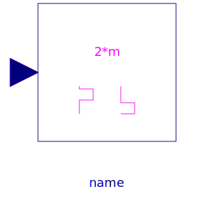
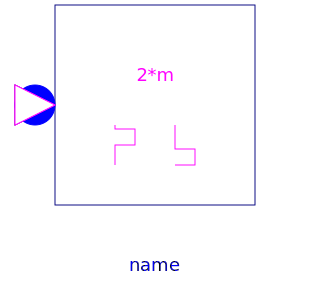

A generic controller with signal input and 2*m
firing signals is provided in
Signal2mPulse, where m is the arbitrary number of
phases. Additional topology specific controllers with electrical
connectors are also included.
Each controller is equipped with an optional filter to filter the input voltages. By default the filter is enabled.
Such filter is needed if the electrical grid includes a significant voltage drop across the grid impedance distorting the input voltage wave form of the rectifier. The filter included in the PowerConverters library is first order filter with additional compensation of the filter specific phase lag. However, it important to note that the transients of the filters may cause some initial effects which deteriorate after certain periods.
The topology specific controllers allow enabling and disabling
of the firing signals. The internal enabling signal of the
controllers is either derived from the parameter
constantEnable, if useConstantEnable =
true. For if useConstantEnable = false the
internal enabling signal is taken from the optional signal input
enable.
| Name | Description |
|---|---|
|  Signal2mPulse | Generic control of 2*m pulse rectifiers |
|
|
Control of 2 pulse bridge rectifier |
|  VoltageBridge2mPulse | Control of 2*m pulse bridge rectifier |
| VoltageCenterTap2mPulse | Control of 2*m pulse center tap rectifier |
| PT1 + all-pass filter |